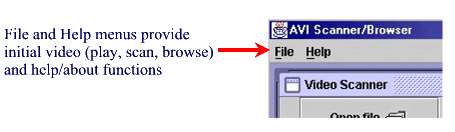
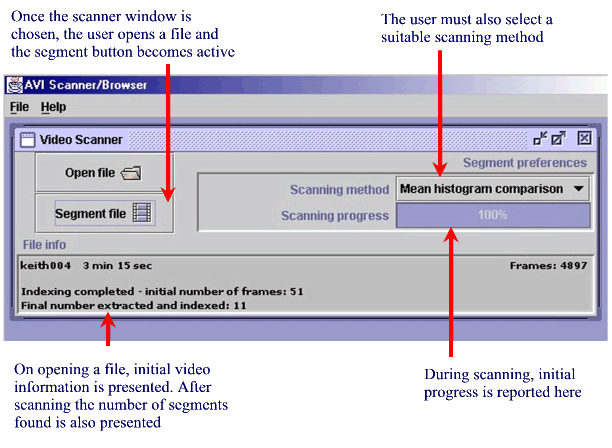
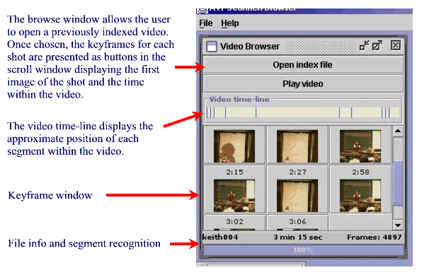
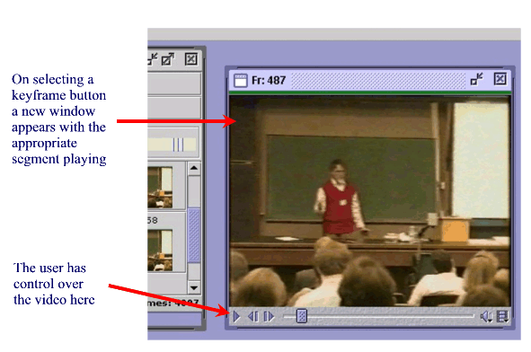

Help |
Credits |
Links |
The AVI Scanner/Browser is a useful utility for users dealing with large volume video data in AVI format. The user can view the contents of large files without manually seeking through the entire data to locate an appropriate portion. By using techniques which compare the content of selected images taken at regular frame intervals, the scanner creates an index file (text format) that contains the location of large scale changes within the data. Once this index file has been established, the user can refer to this to locate the particular shots without further scanning. These shots are represented visually as buttons which play the requested portion of the video only.
The AVI Scanner/Browser has three capabilities; Play a video file, scan or index a file using a variety of methods and browse a previously scanned file. Using the file menu (Fig 1.) provide this choice. The help menu provide the user with details on the functions of the application and help details. To Play a file, select File, Play. A file chooser dialog will appear and on selection the video will start playing from time zero.
Figure 1

To scan a file (File, Scan), a window appears similar to that in Fig 2. containing Open and Segment buttons, Segment preferences and a File info box. Until a file has been selected (using Open file), the Segment button remains inactive. After selection (file info is displayed in the box), the user must select a suitable scanning method to proceed with scanning. During scanning, an initial suite of images are selected from the video data, progress shown in the scanning progress bar. At 100%, the frame locations are stored, or if a comparison method is chosen (i.e. Pixel or Histogram comparison), once the comparisons have been. In the latter case the number of frames selected is usually reduced based on video frame similarity. These data are presented in the File info box on completion of keyframe selection irrespective of method.
Figure 2

To Browse a file (File, Browse) the user must open the indexed (.txt) file associated with the video file (which will load automatically). Once loaded (progress bar reaches 100%), the keyframes and associated approximate times are presented in the Keyframe window (Fig 3.). In addition, to gain a feel for where the shot changes occur within the entire video, a time-line is shown which provide a summary for the user on where each change occurs in relation to the other changes. Positioning the mouse over shot indicators (vertical blue lines) in the the time-line will show where the approximate frame number each shot starts at. Each keyframe is defined by a button displaying the time and starting image of each segment (mouse hovering will display segment number and start frame location), which once pressed, creates a new window with the correct segment playing (Fig 4.). Also, to indicate better which segment you are playing, a red line appears in the time line relating to that segment.
Figure 3

Once opened, the segment window (Fig 4.) plays from the appropriate time/frame location shown in the keyframe window. It stops at the junction with the next shot/segment. The starting frame number is also shown in the header bar to show the user which segment they are viewing. Controls for Play/Pause, Rewind and Fast Forward frames, adjust data volume and more detailed file info are presented. A slider bar shows the location (within whole video) and allows the user to quickly scroll back and forth through the data. On positioning the mouse over the slider, the changing time of the playing segment is shown along side the entire video length in time.
Figure 4

Each of the scanning, browsing, help and about windows will open only one instance. Multiple playing and segment windows can be opened, but it is inadvisable to have too many open unless comparisons between segments are being made as this reduces system resources. Also, due to the heavyweight components used by JMF, any video window open will overlap other window components (e.g. window title bars). It is therefore advised to minimise all other windows or manually position to avoid overlapping.
This application was developed with JDK1.3 incorporating additional packages from the JMF and JAI APIs by Iain Downie. Supervision was provided by Dr Joemon Jose and Mark Baillie.
For more information visit: AVI Browser webpage